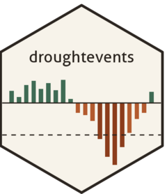
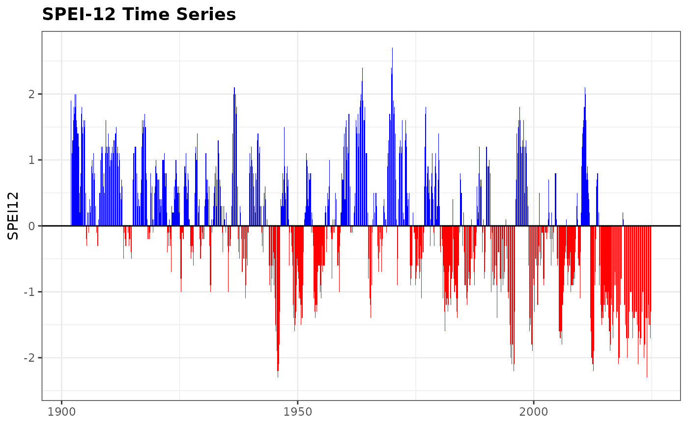
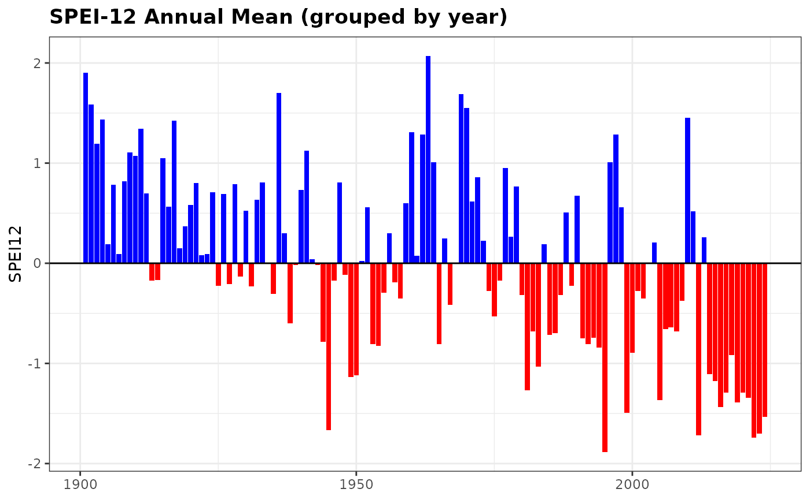

Plot Drought Index Time Series with Positive/Negative Bars
Source:R/plot_drought_ts.R
plot_drought_ts.RdCreates a bar plot of a drought-related time series (e.g., SPEI or SPI), where values above and below zero are colored differently. Optionally, the time series can be aggregated and displayed by year.
Usage
plot_drought_ts(
df,
vname,
title = NULL,
date_col = "date",
pos_color = "blue",
neg_color = "red",
zero_line_color = "black",
zero_line_linetype = "solid",
by_year = FALSE,
y_axis_title = NULL
)Arguments
- df
A
data.frameortibblecontaining the time series data.- vname
A string. Name of the numeric column representing the drought index.
- title
An optional character string for the plot title.
- date_col
A string. Name of the column containing date information (default is
"date").- pos_color
Color used for positive values (default is
"blue").- neg_color
Color used for negative values (default is
"red").- zero_line_color
Color of the horizontal line at zero (default is
"black").- zero_line_linetype
Line type for the horizontal zero line (default is
"solid").- by_year
Logical. If
TRUE, aggregates the drought index by year and plots annual means (default isFALSE).- y_axis_title
Optional label for the y-axis. If
NULL, the name ofvnameis used.
Details
This plot is useful for visualizing the temporal dynamics of drought indices,
highlighting positive (wet) and negative (dry) periods. When by_year = TRUE,
the function averages the index per year and plots one bar per year.
Examples
data(spei_granada)
plot_drought_ts(spei_granada, vname = "spei12", title = "SPEI-12 Time Series")

plot_drought_ts(spei_granada, vname = "spei12", title = "SPEI-12 Annual Mean", by_year = TRUE)
